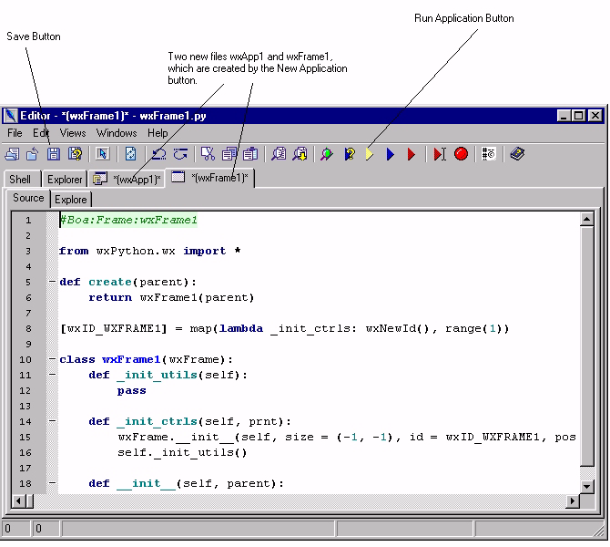
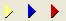

This section presents a short tutorial. The purpose of the tutorial is
to familiarise you with the Boa Constructor development environment.
This
tutorial takes you step-by-step through the process of building a
simple
Text Editor, called Notebook. After working your way through this
tutorial,
you will understand enough to get productive with Boa Constructor.
You will learn how to:
Create an application.
Create frames, menus and status bars.
Create controls such as buttons, text entry fields and labels.
Configure the controls to your requirements.
Work with common dialogs.
Design your own dialogs.
2.1 Creating a new Application
Decide on a directory to hold the application. If necessary
create the
directory.
Create a new application using the new application button shown
below from the Palette.
Application button - tool tip is wx.APP
Save both the App1.py file and the Frame1.py file to the
directory
you created earlier. You can use the 'Save' button on the Editor
toolbar.
Notice that the asterixes (*) disappear from the name when it is saved.
These indicate that there are unsaved changes in the file.
You now have an application, which just shows a blank frame. Use
the
'Run
Application' button on the Editor toolbar to execute the application.

The above shows you in the Editor section the two new files you created
and
saved.

Clicking on run button (yellow) will show you the result of "your
programming", i.e. just an empty frame.
 Application button - tool tip is wx.APP
Application button - tool tip is wx.APP